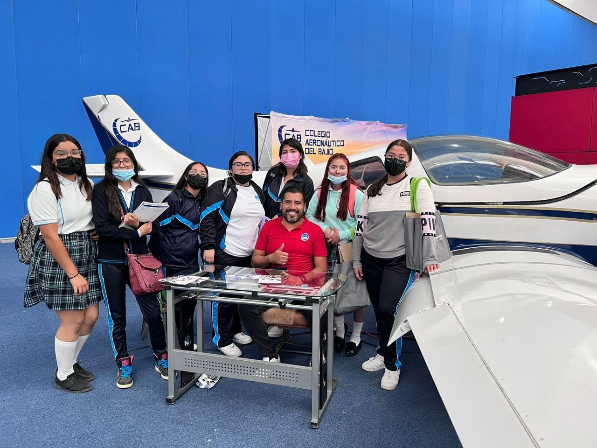

El subsistema de Educación Media Superior CETAC responde a las siglas de Centro de Estudios Tecnológicos en Aguas Continentales, establecido en los Estados Unidos Mexicanos, cuenta con directores altamente calificados en sus distintas áreas, adscrita a la SEMS (Subsecretaría de Educación Media Superior), que a su vez depende de la SEP (Secretaría de Educación Pública).

Somos una institución que fortalece la educación media superior tecnológica en los ámbitos acuícola y de servicios que se ofrecen a nivel regional, con la finalidad de consolidar la estructura educativa que contribuya en la formación y preparación de profesionales técnicos que se desenvuelvan en el medio laboral y social, derivado de la vinculación con los sectores social y productivo.